Approved browser reference at ccabc09 beside the Android implementation. Native captures use the explicitly selected Android 16 x86_64 emulator, emulator-5554, at 1080 × 2400 px / 420 dpi (411 × 914 dp). Browser specimens are 390 × 844 CSS px. Both images use the same displayed width below; their screen proportions and native system bars remain visible.
Conversation and setup captures use labeled synthetic snapshots in an isolated diagnostic installation. They demonstrate native composition, not connected agents or successful model requests. Phone-access captures use actual Android state and consent cancellation. The real PTY check is reported separately.
Joined setup and composer, quiet destinations, centered draft prompt and a 34 dp visible send circle inside a 48 dp target. Native choices remain explicit; text in the diagnostic draft survives earlier navigation. Android sans-serif replaces the reference’s Trebuchet stack. Native touch targets add vertical room around the composer.
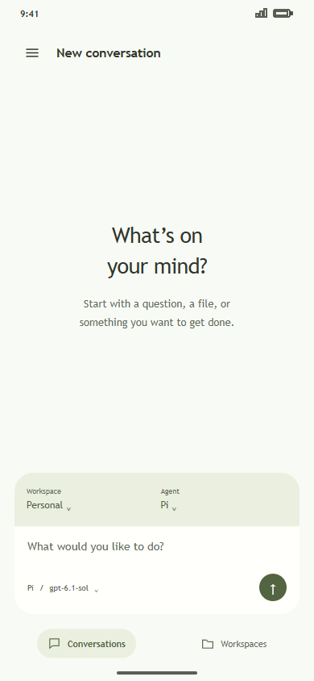
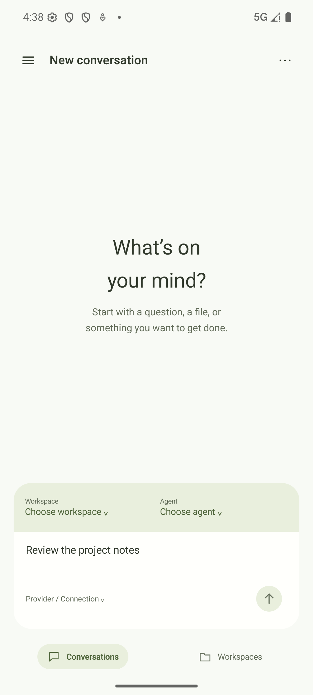
The user bubble has the reference’s asymmetric shape. Assistant text stays on the surface, with 19 sp headings and 14 sp body at 1.8 line height. Tools disclose selectable monospace output. Done describes turn completion. The native header also retains the existing new-conversation action.
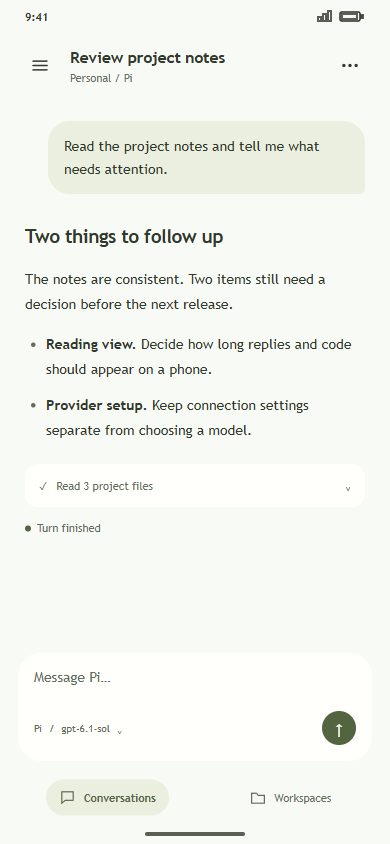
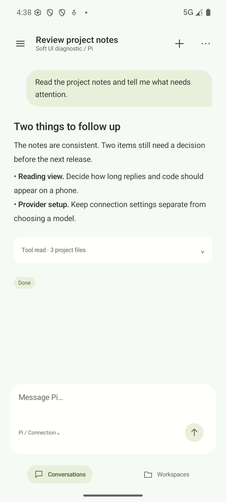
Settings uses compact rows and a two-column named swatch grid. Appearance and palette save independently. All twelve role sets pass contract parity; palette navigation preserves the draft, active conversation and terminal identity.
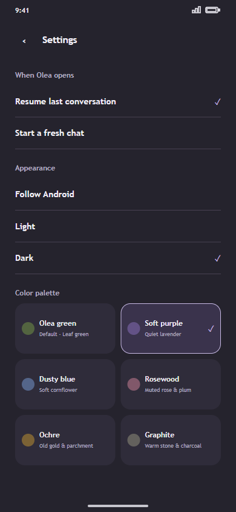
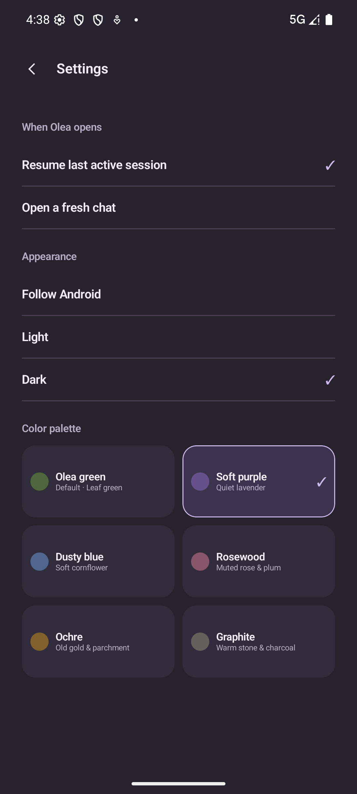
Configure and install/update belong to their agent group. The diagnostic has no installed agents, so it shows actual Not installed states. Management has Back navigation and no unrelated global new-chat control.
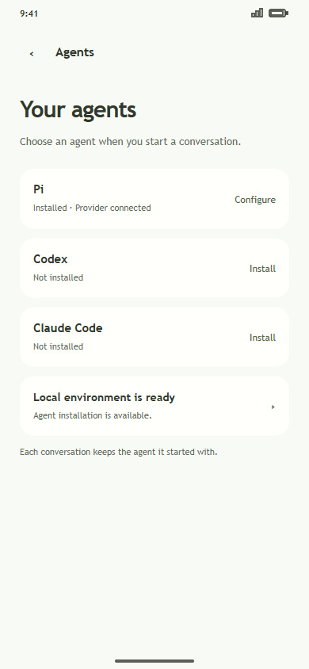
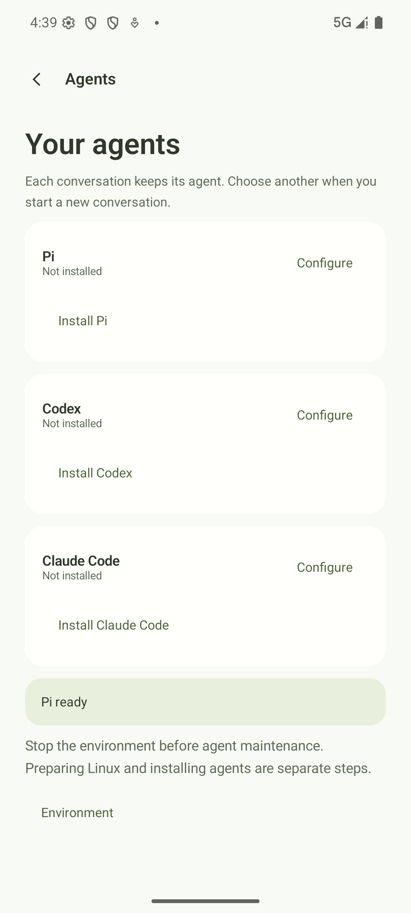
A real bundled xterm WebView renders the fixture below. Colors include terminal background, ink, accent, muted, keys and notices. Fonts use native monospace at 12 sp equivalent with system font scaling. The native terminal retains new-shell, close, interrupt and copy controls; leaving the view remains separate from ending a shell. The real PTY suite and live palette continuity also passed with zero provider requests.
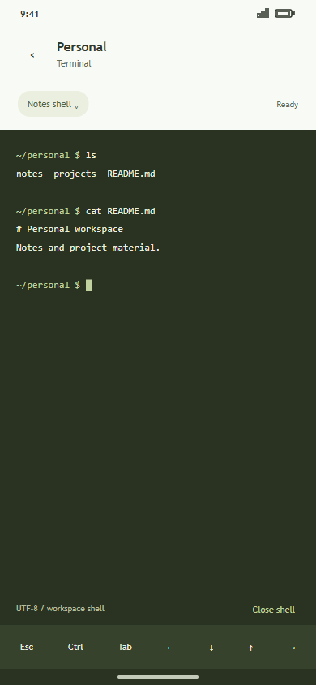
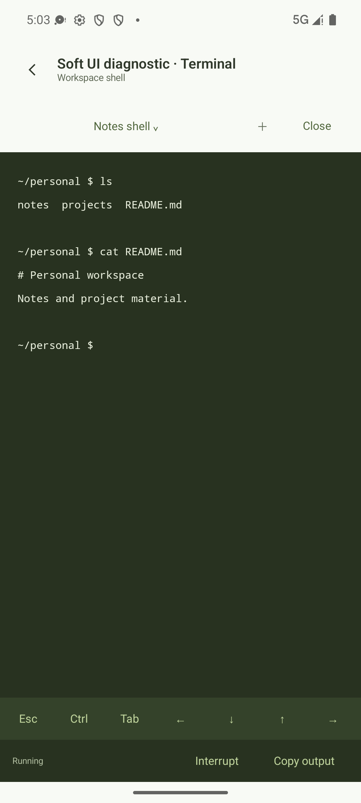
This capture comes from the ordinary app, a real backend and PTY in the isolated installation. Settings changed the palette to Dusty blue while preserving appearance and the running shell; another command succeeded after returning. Shell startup group-name warnings remain visible.
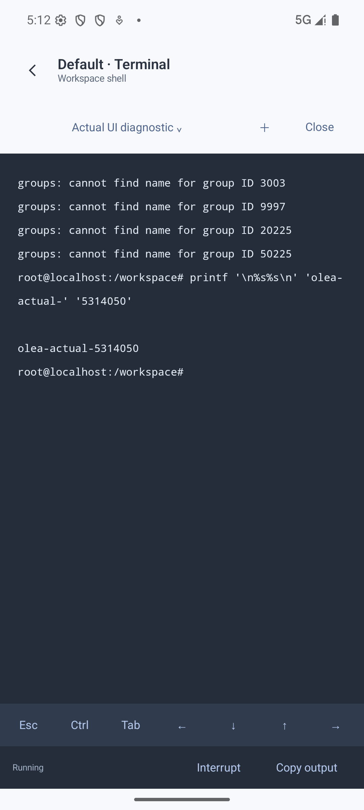
The narrow examples constrain the native surface to 320 dp and use 1.5× sp scaling inside the diagnostic. Gboard and Android settings/consent are genuine system UI. No grant was simulated, no Accessibility/all-files grant was changed, and capture was declined.
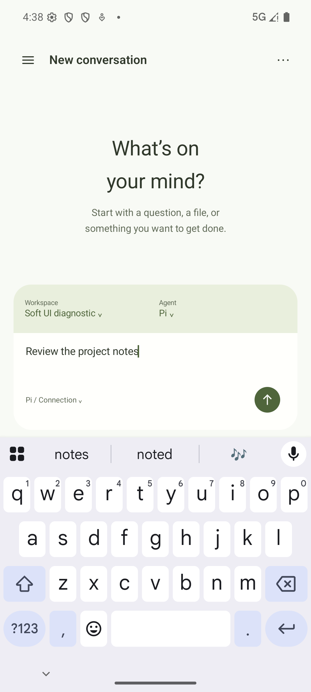
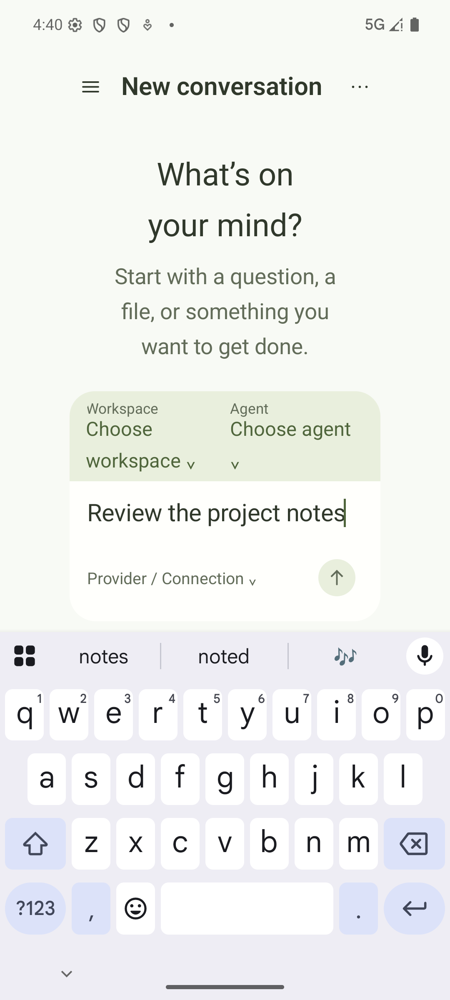
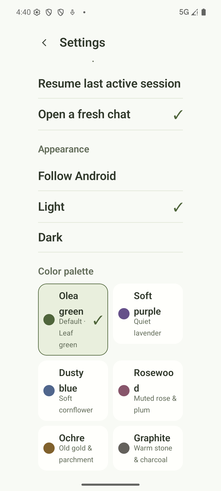
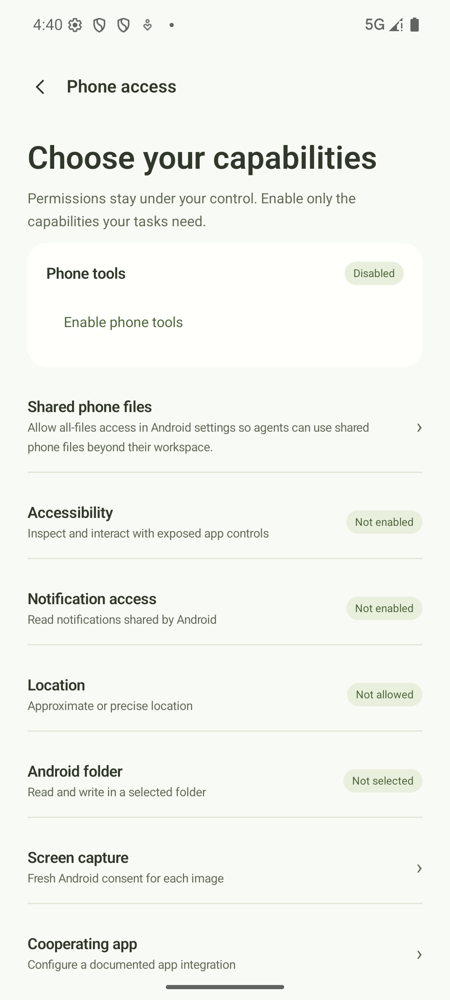
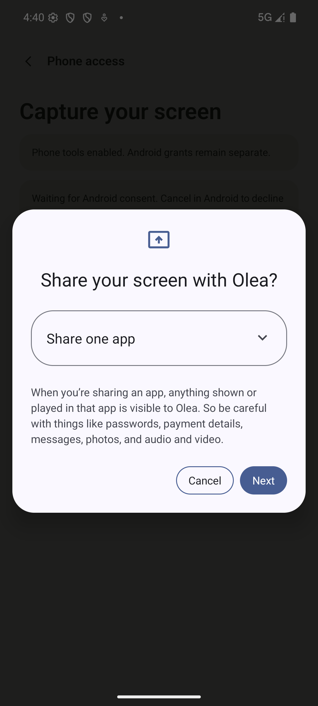
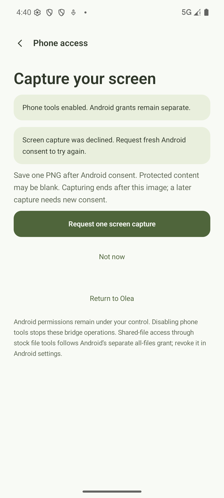